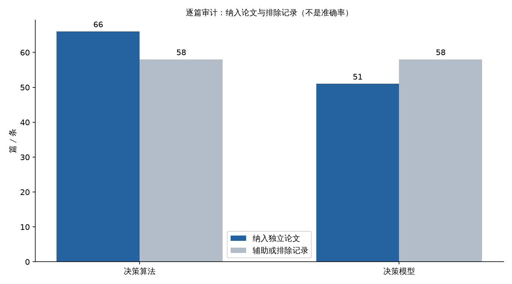

决策算法与决策模型：117篇独立论文与当前实现审计
文献与PG测量日期：2026-10-13；最终整合复核：2026-10-14。审计分支为 fix/TASK-55-literature-validation-audit，整合基线 f2d1aa6（含已合并的 #60、#61），最终冻结代码指纹记录于 validation_results.json。源码、摘要来源、修复、历史证据和生产测量分别标明；工作区中其他任务的未提交修改不作为本PR实现。
1. 结论与交付边界
严格纳入决策算法66篇、直接足球决策模型51篇独立论文，均超过各50篇的要求。逐篇来源、方法、代码映射、排除理由、适用性和阅读深度见算法审计CSV与模型审计CSV。这是元数据/摘要级审计，全文阅读与论文实验复现均为0，不能称117篇全文系统综述。
市场先验、残差学习、时间外验证和按比赛聚类的方向有文献依据。但已确认的采样、校准时间泄漏、评估与持久化参数不一致、汇总指标掩盖执行子群退化会使验证结论失真，属于重大实现偏差。相关代码已在本分支修复；issue #55中的完整预测上下文、新验证契约、现金原子预占、影子收益及训练调度已实现并通过冻结回归；独立审查又发现已结回执只读第一页100条，已实现后台轮转补扫及回填，最终源码/刷新与浏览器部署检查已通过，但投注关闭时未调用场馆补扫。统计增量、状态可比CLV及独立挑战者仍需前瞻数据，不能由工程修复替代。较早新代资格探针确认 3,154 条输入覆盖 5 场比赛，但完整可训练 cohort 为 0，故 cycle_matches=100 时保持等待是正确状态，不应为了展示训练成功而使用旧代历史。
其他agent在issue #58提供了进球后旧价格与虚拟赛误分类证据。本次整合其已合并的#60报价冷却修复及#61七坐标堆叠学习器，保留本分支的验证修复。先修输入和评价的有效性，再验证模型增量；没有证据支持仅调高阈值或增加参数就能获得正收益。
本轮验证使用隔离测试与只读生产查询，不提交真实投注或强制晋升候选。容器发布与实际运行结果单独记录于验证章节；早先#58的上线结论不冒充本次测量。
2. 纳入规则与论文覆盖
| 轨道 | 审计记录 | 严格纳入独立论文 | 未纳入 | 阅读深度 |
|---|---|---|---|---|
| 决策算法 | 124 | 66 | 58 | 28元数据+摘要、22保存摘要片段、16元数据与既有方法核验 |
| 决策模型 | 109 | 51 | 58：29辅助、29排除 | 44 OpenAlex摘要、3出版社登记摘要、3 arXiv摘要、1机构摘要 |
算法组有65个独立DOI与1条可核验无DOI来源；4篇直接体育研究、62篇可迁移统计/经济方法。模型组51个不同DOI，42篇期刊文章、6篇会议论文、3篇预印本。跨轨道纳入DOI重叠为0。独立论文不等于独立数据集：若干模型论文复用Soccer Prediction Challenge样本。
证据分级：A 为本仓库可核验源码/测试/测量和原作者、机构、出版社登记材料；B 为聚合摘要与方法迁移；C 为待测工程假设。44篇模型组OpenAlex摘要本轮未逐一对照原出版物；算法组16篇只有元数据与既有方法核验，不能将未读全文的实验细节当作已确认结论。算法审计说明、模型审计说明逐项保留限制。
去重同时核对DOI、题名、作者和版本。NFL、球员位置/门将/疲劳、合作价值等错目标条目排除；xG/action-process、书章、综述、信息时点未明的候选不计入直接模型门槛。高准确率但无时间设计/指标口径的记录不用于参数调优。模型审计披露了Kaggle数据赛季矛盾、摘要拼接污染、重复期刊/预印本版本等情况，没有据此断言论文造假。访问遇到Crossref 429、出版社403等限制均保留记录。

图由审计数量CSV和make_figures.py重现，使用WenQuanYi中文字体。改变严格性只会改变覆盖数量，不会使文献自动成为生产收益证据；不使用主观分数冒充测量值。
算法论文的关键对应
| 方法族 | 可核验代表论文 | 当前代码/判断 |
|---|---|---|
| 概率评分 | Gneiting & Raftery, Strictly Proper Scoring Rules（DOI）；Brier（DOI） | core/model_validation.py、core/learned_model.py；Brier/log loss与准确率分开 |
| 融合/stacking | Wolpert, Stacked generalization（DOI）；Breiman, Stacked regressions（DOI） | core/ensemble.py、core/oof_peer.py；同源算法数量不等于独立信息数量 |
| 校准 | Beta calibration（DOI）；Stable reliability diagrams（DOI） | core/probability_calibration.py；挑战方法需时间外校准，不能用测试标签拟合 |
| 去水 | Štrumbelj（DOI）；Clarke等（DOI） | core/devig.py；proportional/power/Shin不是本身的优势来源 |
| 多重搜索/漂移 | White Reality Check（DOI）；Hansen SPA（DOI）；concept drift survey（DOI） | 当前缺完整候选登记、嵌套搜索与分层漂移监控 |
| 不确定性/资金 | Baker & McHale（DOI）；Risk-Constrained Kelly（DOI） | 现金限额与研究Kelly分开：PG账户锁＋发送意图原子预占，全账户和单场共同约束 |
66篇的完整结论逐行保存于CSV；天气等研究只用于评分/校准方法迁移，不当作足球盈利证据。
模型论文的关键对应
| 模型族 | 可核验代表论文 | 与本实现的关系 |
|---|---|---|
| 独立/低比分Poisson | Maher（DOI）；Dixon & Coles（DOI） | core/live_model.py是市场反推剩余比分基线，并非已实现动态球队能力或低比分ρ |
| 动态/双变量 | Dixon & Robinson（DOI）；Karlis & Ntzoufras（DOI）；Koopman & Lit（DOI） | 相依比分、状态强度是挑战方向，需同窗口消融 |
| 历史数据+赔率 | Combining historical data and bookmakers' odds（DOI） | 当前独立球队历史/评级信息不足；多数peer仍由同源盘口产生 |
| 树/领域知识 | Relational gradient boosted trees（DOI）；domain knowledge（DOI） | 先确认可见特征和增量，再增加容量 |
| 滚球模型 | Bayesian In-Play Prediction Model（DOI）；Stochastic modelling（arXiv） | 事件、阶段与补时需要可靠时钟；不能使用决策后的走势 |
| 深度预测 | Deep learning framework（DOI）；2024评估研究（DOI） | 复杂度不保证优势；目前资源和独立样本优先支持小模型 |
3. 最新系统架构与公式
flowchart LR
A[乐鱼盘口/可见比分] --> B[去水市场先验]
B --> C[剩余比分Poisson]
A --> D[走势/微结构变体]
C --> E[经济学融合算法]
D --> E
E --> F[市场offset残差堆叠]
F --> G[完整市场曲线一致化]
G --> H[同时间市场配对评分]
H --> I[实际执行子群门控]
I --> J[影子/推荐]
K[比分变化与报价时钟] --> J
L[标签可知时间] --> M[时间隔离训练/校准]
M --> F#61已将原60坐标梯度残差学习器改为7个可估计坐标：截距、融合算法残差、5个peer算法残差；其余权重为0。保存的权重向量仍长60，因此应区分parameter_count=60与active_parameter_count=7。本分支保留该实现，并保留明确分区、持久化权重最终测试和执行子群门槛。
概率形式为 p = sigmoid(logit(p_market) + w · residual_vector(x))；市场logit是固定offset，权重全0时回到市场。peer经训练期/OOF校准，再投影到完整盘口的概率空间。市场OU/HAD反推Poisson不等于独立球队强度、xG、红牌hazard或Dixon-Coles；已验证可见的部分赛况进入特征也不等于完整事件编码。
训练不是强化学习。它以已结算标签监督拟合，按比赛权重而非相邻报价独立计权；模型推理/训练仍由worker承担。默认训练/较早验证预算24/12，#61 Newton求解另设最多30次；这是CPU资源取舍，不能从迭代次数宣称准确率提高。
sequenceDiagram
participant Q as 盘口/赛况接收
participant F as 特征快照
participant W as 独立模型worker
participant P as PG预测
participant L as 赛果标签
Q->>F: event_at/received_at/cutoff
F->>W: received_at <= cutoff 的完整context
W->>P: artifact版本/概率/赔率/输入哈希
L->>P: 结算标签与available_at
P->>W: 按比赛分组的未来评估
W->>W: 校准标签须在最终测试入口前可见
Note over F,W: 完整context先推理，再应用graded分类mask4. 实现偏差、修复与未完成项目
| 审计项 | 原问题/当前限制 | 本PR状态 |
|---|---|---|
| PG取样 | 每场按最早输入LIMIT40，偏向早期；SQLite MOD也欠采样 | 已改时间分层完整曲线 |
| 全局校准 | 使用最终测试入口尚不可知的标签 | 已按settled_at严格排除 |
| 最终认证 | 验证的是另一次临时fit而非保存权重/peer校准 | 已复用持久化参数和明确分区 |
| 概率后处理 | metrics、live/hybrid的coherence路径不一致 | 已统一函数；本轮保留未评分context，先完整投影再分类评分 |
| 执行子群 | 辅助算法提升可掩盖真正执行的ensemble退化 | 已要求economic_ensemble单独过门槛 |
| 走盘/无评级 | 事后标签过滤改变跨线context | 已保留完整context；push/ungraded y=None，分类mask独立 |
| 旧artifact | 旧approved沿用，缺独立验证契约 | 新数据/验证契约统一校验load/shadow/promotion/rollback；保留旧文件 |
| 资金执行 | 固定注额缺全账户pending/unsettled预算，已结回执仅前100条 | PG原子预占已验证；后台每次最多2页轮转全历史，关闭投注跳过读取、保留可重用线程；回填/精确释放/重启经隔离PG验证，最终发布源核验与刷新通过；关闭投注时不调用场馆补扫。无号或缺权威回执继续占额，无TTL释放 |
| 影子收益 | 分类过滤漏计走盘本金 | 独立金融人口，走盘本金1净0、半赢半输按实际支付；首次合约/逐时点分列 |
| 训练调度 | 候选未晋级重复fit；检查全量载入 | 独立完成cohort水位；metadata-only资格证书；训练截点与标签冻结 |
| 迁移工具 | 新空PG预测表缺双接收时钟 | CREATE/ALTER补时钟与赔率，真实隔离空PG迁移、重复迁移实测 |
| 战绩读取 | 宽表诊断拖住核心/实验、取消事务使主结果丢失 | 核心/实验独立reader与缓存；诊断最后5秒，部分计数明确为下界；真实PG和生产连续刷新已测 |
执行子群合成反例：120场、5个辅助算法加ensemble时，pooled Brier delta为−0.09875且区间全负，旧门控批准；实际ensemble Brier从市场0.2025退化到0.4225。新增门槛正确拒绝。它是单元测试反例，不是生产收益测量。
完整context反例：OU2.5概率[.4,.6]与OU3概率[.7,.3]同时投影为[.55,.45,.55,.45]；3球赛果使OU3双向走盘被过滤后，离线只剩[.4,.6]。必须先完整推理再graded mask计分，不能把走盘伪造成二元标签。
5. 对其他agent issue的复核与分歧
| 来源 | 可采纳结论 | 必须保留的边界 |
|---|---|---|
| #58逐帧回放 | 进球后旧价可以在年龄门槛内被误判fresh；模拟利润被不可成交价格放大 | 一小时回放是机制证据，不是全库统计；本次未重新跑全量生产对账 |
| #58 ROI附件 | 本地233场订单按决策赔率重算ROI −8.53%，聚类区间[−17.52%,+0.29%] | 不是场馆权威已结算盈亏；与TASK-40样本/时间/口径不同 |
| #60已合并 | 45秒默认比分变化冷却、报价晚于变化+冷却、执行同检查；N分钟虚拟赛识别 | 本轮新代隔离缺状态证据的旧历史，原始记录保留；冷却长度不是普适最优 |
| #61已合并 | 7坐标堆叠候选、60维artifact格式；报告称尚未过晋级门 | 其benchmark不是本PR完整context/执行子群认证；需新独立数据复核 |
同源算法不提供额外外部信息，但跨盘口约束是否有可成交增量必须实测，不能仅从同源断言所有定价方法必然无效。对于比例去水的同一完备市场，若S=sum(1/odds)>1，q=(1/odds)/S，则odds*q−1=1/S−1<0；这不是所有去水方法或跨盘口策略的无盈利定理。
外部锐价、独立球队历史/事件、校准与状态建模都是可研究增量，不将“外部参照是唯一盈利路线”视为已证定理。也不把30/60秒未来同盘口变化直接称为公平CLV：必须区分同状态、状态变更、半场/全场基准和未成交报价，否则新的指标仍会混入比分事件。
#58涉及密钥/API权限建议作为独立安全事项引用；本轮没有轮换用户凭据、采购数据源或更改真实下注开关。历史污染必须先隔离/重标，然后重新建立权重和训练基线；只修当前输入不能自动使旧利润和旧模型有效。
6. 成熟方案对照与后续优化顺序
下表是定性工程评估，不是测量分数；代表成熟工具以官方资料为参照，未执行其本机速度对照。
| 方案 | 接入层级 | 数据要求 | 盘口完整性 | 资源/延迟 | 校准/验证 | 维护成本 | 本项目适用性 |
|---|---|---|---|---|---|---|---|
| penaltyblog Poisson/DC/双变量 | 比分预测 | 历史球队结果/赔率 | 比分分布支持AH/OU | 小-中；需实测 | 需自建时间外评估 | 中 | 候选基线，不能冒充已实现 |
| scikit-learn Logistic/校准 | 概率预测 | 冻结特征与标签 | 需外部coherence | 小；offset需专门实现 | 支持常规校准，时序契约由项目负责 | 低-中 | 当前手写offset路线参照 |
| LightGBM | 非线性预测 | 足量独立特征 | 需外部支付/context | CPU中等；需限制线程 | 需时间外校准 | 中 | 后续挑战者，不直接替换 |
| PyTorch 序列/事件网络 | 序列预测 | 大量可见事件与历史 | 需外部结算/context | 高；训练资源压力大 | 全部由项目验证 | 高 | 当前不优先 |
优化先后：输入可成交性/历史污染 → 完整context与契约 → 可信概率/收益评估 → 增量信息与候选调参 → 资金执行。正CLV、低Brier或高胜率各自只证明相应指标，不能单独推出正净收益。
| 优先级 | 任务与状态 | 验收标准 |
|---|---|---|
| P0 | 最新报价冷却/虚拟赛新规则：#60已合并，本分支保留 | 不回退新规则；历史污染隔离另验收 |
| P0 | 本PR采样/时间/持久化/执行子群：已实现 | 正常+泄漏/退化回归通过；数据与artifact可追溯 |
| P1 | 完整context与graded mask：本轮实现 | 走盘、半赢半输、缺方向、无评级的线上/离线逐方向概率一致 |
| P1 | validation-contract版本：本轮实现 | 旧artifact拒绝；load/shadow/rollback/promotion统一检查 |
| P1 | 历史旧价/虚拟赛污染隔离、shadow收益口径 | 走盘计本金1利润0；分类和完整收益样本分离；同场去重清晰 |
| P1 | 资金原子预占、后台回执补扫：实现、冻结测试及发布可用性通过，原生现场补扫未调用 | 并发/未知回执/重试不超预算；首100条外回执可逐轮发现；无号保持held，关闭投注停止读而可重新启用 |
| P2 | 完成训练cohort独立进度、增量check-only：本轮实现 | 新比赛训练期间不丢；未晋级不重复fit；探针不全量重载 |
| P2 | 候选登记/nested时间调参/漂移 | 调参/校准/最终测试分离，按盘口/联赛/时段报独立比赛数 |
| P2 | 外部价格或独立球队历史；DC/动态强度/事件消融 | 同一前瞻窗口配对Brier CI上界<0、log loss不劣，至少3折中2折改进；执行子群和资源另过门槛 |
| P2 | 状态可比的CLV与成交成本 | quote/state/成交价可追溯；未来事件分层，缺价不伪填0 |
训练24/12预算和报价45秒冷却均是可调配置；更改预算应重跑同一冻结评估，改变冷却应衡量状态污染/推荐覆盖/可成交性，不能凭默认值宣称最优。执行子群100场门槛是最低样本约束，仍要求配对置信区间；放宽为50场可能降低检出可靠性，加严到200场可能延迟晋级，均不消除context偏差。
stateDiagram-v2
[*] --> Audit
Audit --> InputFixed: 报价/历史污染修复
InputFixed --> ValidationFixed: context与契约闭合
ValidationFixed --> Challenger: 注册候选与独立窗口
Challenger --> Shadow: 同一前瞻输入
Shadow --> Approved: 实际执行子群与资源门槛
Shadow --> Challenger: 样本不足/退化
Approved --> Shadow: 新cohort/漂移复核7. 真实PG采样与性能
PG数据加载附件记录一次只读repeatable snapshot检查：978.4195秒（约16.3分钟），SQL 973.9919秒，35批、每批最多64个标签比赛，最慢批55.0012秒。检查50,075行，得到47,437有效行/1,057场；未评级2,638、缺标签0。2,193标签比赛中1,136场无匹配输入；9,508时间桶中1,959空桶。
PG最多8个索引驱动时间桶，SQLite按稳定时间点分桶，采样单元为完整(match_id,at,algorithm,market)曲线，保留所有盘口线/方向。因此40行是软目标：每场最大87，均值47.3746，没有40行硬上界；内存需按真实行数预算。目录估计25,371,612行/957场与本次1,057场抽样口径不同，full_audit_complete=false，不能当作全库准确计数。
PG采样fixture附件覆盖HAD单/多点、OU多线、无效receipt-clock整曲线拒绝和重复检查。生产5519689有75行/8点/36完整line组；5767981有43行/7点但1个源方向组不完整。采样保留曲线不修复上游已缺失的数据。单次加载与批次最慢值不是p95，也不是训练一轮时长；新#60/#61尚未重跑该生产抽样。
较早的新代资格探针在独立PG上返回 2,484 个标签比赛、3,154 条输入涉及 5 场最新比赛，但 eligible_matches=0、cohort_verified=true、coverage_status=complete；原因是没有同时满足版本、双时钟、完整盘口曲线和不可变特征资格的比赛。两次只读探针分别约 10.26 秒和 8.46 秒，未提交任何盘口或投注请求。该结果解释当时模型页面的等待状态；它不作为后续时刻的最新数量或完整训练时长。
同一独立PG的现金预占并发探针验证了全局 1,000 分上限（8 个并发请求中接受 5 个、持有 1,000 分）和同 selection 只能接受 1 笔；探针没有提交到场馆。旧 reservation 若缺少权威回执继续占用预算，故不会因超时自动释放。该结果是原子预算行为验证，不代表真实投注或盈利。
8. 验证与复现
最终业务源码冻结为 source-freeze-v6.json，202个源文件哈希复核无变化。Python3.12 Docker全量测试 1,716项、跳过14、99.110秒、退出码0；mypy 120文件、ruff、184个Python文件编译、15个JavaScript语法与git diff --check均退出码0。编译产物留在项目output。JavaScript首次检查误把Playwright CLI匿名函数表达式当函数声明而失败；按真实表达式载体加括号复验通过，没有为此修改业务源码。
历史freeze-v5的1,695项/14跳过/92.721秒、freeze-v3的1,678项/14跳过/92.338秒及1,618项整合测试继续保留，不能覆盖后来的代码。早先ctime、完整曲线fixture、只读挂载等失败和依赖检查失败均不删除；实际命令、退出码和源码哈希见验证附件。旧AGENTS要求的根requirements.txt当前不存在，旧依赖命令失败不伪称通过；本轮不宣称旧爬虫链路已验收。
战绩读取及诊断语义
核心全历史统计和实验主要指标各在独立repeatable-read reader中读取，预算分别60秒、30秒；关闭核心reader并通过独立缓存连接发布后，再读实验。实验取消不会回滚核心。GET返回缓存、时间和状态，初始未知显示loading。缓存持久化另有10秒预算，失败不丢已完成的内存快照。
实验先完成arms、审核状态、operation和paired；最后才读errors诊断，最多5秒且不超过实验剩余预算。identity按keyset每批256回源，cap10000。errors_total仅是当前窄projection同一reader快照中的审核失败count，不代表全库已认证完整；errors_counted只计成功读取的有效dict payload。cap、缺payload、无效JSON或资源预算耗尽均标partial，分类计数为下界，未读取不等于没有错误。只对TimeoutError/SQLSTATE57014降级；取消后不向该连接再发SQL，其它程序异常继续抛出。
真实只读PG三轮：核心 27.4066/26.2588/28.8482秒，主要实验 11.0773/11.9859/10.6196秒，均ready。错误诊断分别只读 512/512/768条，分母均36,284，全部明确partial；三轮取消后的SQL数均0。三次测量不是持续运行P95，实验ready也不等于诊断详情完整。
既有history发布已核验API/model容器镜像及源码一致；生产v6观测 263.66秒、18次HTTP请求均200，核心与实验各至少3个刷新周期推进，最终分页/核心/实验均ready。PG设置version52和SHA256 8de50a9ab53f89392a97f723ad50820f478908bbc97ae03938b286fb22b3218b保持不变，投注关闭、训练开启。生产浏览器v5把允许的partial诊断“读取超时”误判为整页失败，记录保留；修正后v6读取真实页面HTTP200，核心/实验/记录ready、partial768/36284解释可见、无pageerror或写请求。该短观察不是4小时稳定性测试。
资金回执补扫与最终部署边界
独立审查发现已结回执只取page1/100条，会让更老订单长期占额；只看held_count=0也会漏掉尚未回填的旧订单。修复前只读生产inventory记录unknown3、rejected76、pending330、sending1、accepted58，而held0；这不能解释为没有敞口风险。
现已实现后台warm每次最多2页的全历史轮转补扫，提交预算仍保持原第一页读取，不把全历史扫描放进submit路径。关闭投注时下一轮跳过读，线程可复用；超时/计数漂移/缺失回执保持partial，无号unknown继续held，不凭缺席释放。隔离PG24项断言通过（65.2241秒、退出码0）：351条accepted和1条无号unknown回填352笔/70,500分，精确native回执只释放1笔，重启后351笔/70,300分保持且无号unknown仍held。该PG探针不调用场馆HTTP，不代替原生分页验证。
最终freeze-v6构建、部署及后续观测退出码0：186.98秒、13次HTTP200，核心时点10:27:43/10:28:44/10:29:47 UTC，实验时点10:28:13/10:29:18/10:30:20 UTC，均为此次部署后的3个新刷新周期。4个容器healthy，API与model源哈希匹配冻结代码；API镜像205cb6489528…、model镜像e465679e7845…完整指纹见附件。设置version52及原SHA256不变，投注关闭、训练开启，queue/retry均0。原生补扫状态not_started符合关闭投注时不读场馆的行为，不能称已完成真实现场补扫。最终生产浏览器v7 HTTP200、core/experiments/entries ready，partial768/36284解释一致，无pageerror或写请求。上文263.66秒与浏览器v6属于较早history发布，各自保留其证据范围。新代完整训练资源时长、前瞻相对市场增量、状态可比CLV及权威净收益均未由本轮工程测试证明。
python3 reports/decision-algorithm-model-audit/scripts/verify_literature.py
python3 -m py_compile reports/decision-algorithm-model-audit/scripts/*.py
python3 reports/decision-model-accuracy/scripts/md_to_html.py \
reports/decision-algorithm-model-audit/REPORT.md \
reports/decision-algorithm-model-audit/REPORT.html图表必须在容器挂载/usr/share/fonts/truetype/wqy后执行make_figures.py，输出本报告1张图；不在宿主机安装包。原始collect_literature.py仅重抓来源目录，不能替代逐篇审计CSV或覆盖本次人工判定。
9. 历史与远程跟踪
TASK-40的160笔/758本金/−10.67利润/−1.41%ROI，以及旧代码+235.83与修正160/160对账，来自历史亏损报告。本轮未重测。#58的−8.53%是另一日期/样本下按决策赔率重算，不是“修复后权威资金又亏8.53%”的因果证明。较早新代资格探针没有合格训练比赛，旧模型/artifact因数据与验证契约不兼容而隔离，不能把旧版本收益或准确率当作当前模型效果。默认Python User-Agent的请求曾被Cloudflare阻止；普通浏览器User-Agent的域名/账号接口为200，该探针差异不当作服务故障。
最终工程发布已核验，原生现场补扫、前瞻统计与研究项仍有证据边界，保持#55 open，关联#58和#52。本PR不关闭这些issue；已合并#60/#61的功能保留。原两组80篇/160篇有效、200个成熟项目共性的表述撤回；GitHub清单只保留元数据目录，未逐个审源码，不能作为成熟实践证据。
最终报告页面验收
Chromium 实测：3 个 Mermaid 在线渲染，中文数量图加载正常；阻断 CDN 后 3 个图均回退为可见图源，页面异常为 0。命令、结果与退出码 0 记录在 data/validation_results.json 的 report_visual_acceptance。图表仅展示文献审计数量，不展示模型正确率。